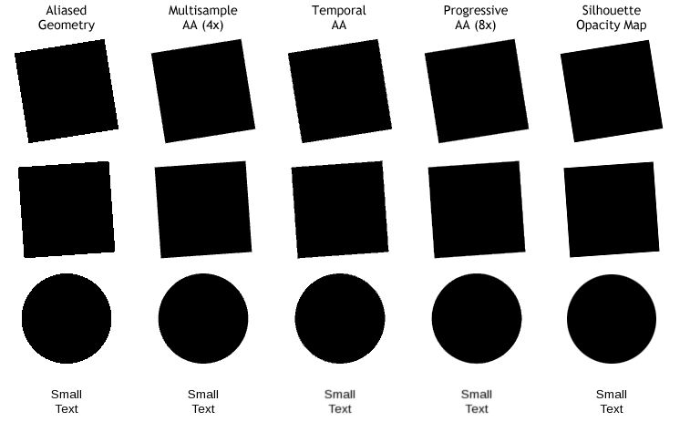
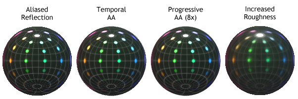

Anti-Aliasing Best Practices
Qt Quick 3D has multiple ways to combat aliasing (the jagged edges) while rendering 3D models. Each technique offers its own benefits and limitations. Multiple techniques can be combined, but with additional performance cost.
Aliasing in General
Aliasing occurs when there is more information present in the original than we can represent in the pixels on screen. Anti-aliasing techniques fall into three categories:
- Techniques that find additional information for a single pixel and represent them all at the same time.
- Image effects that attempt to find where things look bad and sweep the problems under the carpet.
- Techniques employed by artists that attempt to workaround the limitations.
Although anti-aliasing is a useful tool in rendering graphics, it could affect performance of your application if not used wisely. The following sections describe a few different anti-aliasing techniques to choose from. Understanding which technique best targets your problems will help balance visual quality with sufficient rendering speed.
Geometry Aliasing
By default, all geometry is rendered one on-screen pixel at a time. As you can see on the left in the image below, this leaves harsh edges that may be easily noticeable in high-contrast cases, most noticeably here with black-and-white.

Effective techniques for reducing aliasing for geometry
The most correct fix for this is to use Multisample Anti-Aliasing, as it gathers more geometric detail only as needed. Using Temporal Anti-Aliasing or Progressive Anti-Aliasing can also mitigate the issue in a correct manner.
Finally, in certain cases you can use a silhouette opacity map to smooth the edges of the geometry.
Texture Aliasing
When a texture is sub-sampled, fewer pixels than in the original are displayed, resulting in undesirable artifacts based on which pixels are chosen. This effect is worsened when the model is moving, as different pixels are chosen at different times. In the image below, notice how the line between E3 and F3 is missing, strongly present between G3 and H3, then gone for the next 5 columns, and so on.
Effective techniques for reducing aliasing for textures
The simplest (and arguably the best) fix for this problem is to use mipmapping in the image texture itself. Alternative fixes include using either Temporal AA or Progressive AA to gather more information from the texture.
Using Multisample Anti-Aliasing will not fix this problem.
Reflection Aliasing
Similar to Texture Aliasing, a material reflecting the environment will sub-sample the image. In some cases, as seen on the left in the image below, it becomes obvious when fine details are being skipped.

Effective techniques for reducing aliasing for reflections
The most correct solution in this case is using Temporal AA or Progressive AA to find the extra information.
A simple alternative solution that may be acceptable is to make the material less glossy, more rough. In this case lower-resolution mipmaps of the environment are automatically used, blending the sharp details together.
Anti-Aliasing Techniques in Qt Quick 3D
Note: Check out the Antialiasing Example and the Scene Effects Example to exercise some of these features live. Keep in mind however that modern windowing systems are often configured to perform High DPI scaling with a high resolution screen connected. This means that the content of any window shown on screen is rendered at a higher resolution and is then scaled down by the system compositor or some other component of the platform. That is in effect a form of Supersample Anti-aliasing. Enabling anti-aliasing techniques in Qt Quick 3D may then show smaller, or sometimes hard-to-see improvements, because aliasing is already eliminated to a degree by the windowing system's automatic scaling. However, when deploying the same application on another system, it could well be that that particular system uses a platform or a screen where there is no such scaling, and so aliasing and jagged edges are more visible out of the box. Developers are advised to consider the potential presence, or lack of high DPI scaling in their target environments, and experiment with and tune antialiasing settings with this in mind.
Below is an example rendering of the Sponza scene with some anti-aliasing methods enabled. The screenshots were taken without any system scaling applied to the window (no high DPI scaling), so the effects of the various methods are more pronounced.
| AA used | Result |
|---|---|
| No AA | |
| Supersample AA, high (1.5x) | |
| Multisample AA, high (4x) | |
| FXAA | |
| Temporal AA, default strength (0.3) |
Multisample Anti-Aliasing
Multisample AA (MSAA) operates either on the color buffer of the View3D item (this is the default), or, if a renderMode other than Offscreen is used, on the entire Qt Quick window (QQuickWindow, QQuickView, Window, ApplicationWindow).
The edges of geometry are super-sampled, resulting in smoother silhouettes. This technique has no effect on the materials inside geometry, however.
- Pros: Good results on geometry silhouettes, where aliasing is often most noticeable. Works with fast animation without an issue. Many recent GPUs support 2x or 4x MSAA without any performance issue.
- Cons: Can be expensive to use, especially on older mobile and embedded hardware. Does not help with texture or reflection issues.
When the View3D is using the default renderMode of Offscreen, the View3D itself is in full control of multisample antialiasing. Applications can configure this via the antialiasingMode and antialiasingQuality properties of the environment (SceneEnvironment or ExtendedSceneEnvironment) associated with the View3D.
The following example requests the commonly used 4x MSAA, because antialiasingQuality defaults to SceneEnvironment.High.
View3D { environment: SceneEnvironment { antialiasingMode: SceneEnvironment.MSAA } }
MSAA is not implemented by Qt itself, but is rather performed by the underlying 3D API. Hence performance and quality may vary between different hardware and their 3D API implementations.
Temporal Anti-Aliasing
Temporal AA operates on the color buffer of the View3D. The camera is jiggled very slightly between frames, and the result of each new frame is blended with the previous frame.
- Pros: Due to the jiggling camera it finds real details that were otherwise lost. Low impact on performance.
- Cons: Fast-moving objects cause one-frame ghosting.
Temporal AA has no effect when combined with Multisample AA. It can however be combined with Progressive AA.
To control temporal anti-aliasing, use the environment's temporalAAEnabled and temporalAAStrength properties.
View3D { environment: SceneEnvironment { temporalAAEnabled: true } }
Progressive Anti-Aliasing
Progressive AA operates on the color buffer of the View3D. When all the content in the scene rendered by the View3D has stopped moving, the camera is jiggled very slightly between frames, and the result of each new frame is blended with the previous frames. The more frames you accumulate, better looking the result.
- Pros: Provides detailed static images with no performance cost.
- Cons: Does not take effect if any visual changes are occurring. 8x PAA takes one eighth of a second to finish rendering (at 60fps), which may be noticeable.
View3D { environment: SceneEnvironment { antialiasingMode: SceneEnvironment.ProgressiveAA } }
Use antialiasingQuality to control how many frames are blended together (2, 4, or 8).
Supersample Anti-Aliasing
Supersample AA operates on the color buffer of a View3D. This involves creating a color buffer (texture) larger then its normal size, and then downsampling it. This means an increased resource usage and at large sizes the scaling operation can be costly.
- Pros: Provides full-scene anti-aliasing with no limitations on animation.
- Cons: Can severely degrade performance when your scene is already limited by the fill-rate of the graphics system, especially an older mobile and embedded hardware.
View3D { environment: SceneEnvironment { antialiasingMode: SceneEnvironment.SSAA } }
Use antialiasingQuality to control the size multiplier (1.2, 1.5 or 2.0).
Mipmaps
Mipmapping stores the texture along with its pre-calculated lower resolution versions. Whenever the texture is being displayed at a smaller size, the rendering system automatically uses these low-resolution images (which combine many details into fewer pixels).
- Pros: Low performance impact. Greatly improves image quality for textures.
- Cons: Requires potentially costly generation of the mipmap chain, or, with some image container formats, pre-generating the mipmap images in the image asset itself. Uses 33% more graphics memory than the same image without mipmaps.
To have Qt generate mipmaps for a Texture and enable using the mipmap chain when performing texture sampling in the graphics shaders, set the mipFilter and generateMipmaps properties.
Texture { source: "image.png" mipFilter: Texture.Linear generateMipmaps: true }
Specular Anti-Aliasing
Artifacts from the specular lighting contribution may be reduced by enabling Specular Anti-aliasing. These artifacts typically show up as bright dots, perhaps with a flickering appearance.
| Specular AA disabled | Specular AA enabled |
|---|---|
|

View3D { environment: SceneEnvironment { specularAAEnabled: true } }
Note: Materials with a very smooth appearance may change their appearance as if they had a more rough surface when enabling specular AA. This is a result of the underlying lighting calculations.
Fast Approximate Anti-Aliasing
ExtendedSceneEnvironment offers another method of anti-aliasing in form of a post-processing effect. To enable FXAA, set fxaaEnabled to true.
import QtQuick3D.Helpers View3D { environment: ExtendedSceneEnvironment { fxaaEnabled: true } }
Artist-Employed Cheats
Silhouette Opacity Maps
When your model has a consistent silhouette, you can apply an opacity map that makes the outer edge of the geometry transparent. Using a gradient for the opacity will let the edge of the object smoothly disappear. However, even if your opacity map transitions directly from fully-opaque to fully-transparent over the space of one pixel, the result will still provide anti-aliased edges as seen in the example above. This is because image maps, including opacity maps, use bilinear interpolation.
- Pros: Can show softer transitions than normal AA. Can be applied per model instead of per-layer.
- Cons: Cannot be used if the silhouette of the object will ever change. Multiple overlapping models that employ transparency consume fill rate performance, which is often at a premium.
Modifying Materials or Geometry
As demonstrated in the image for Reflection Aliasing above, sometimes the simplest fix for problems is to change the artwork. If you are getting distracting specular glints on the corner of your model, ask yourself: Can I make the material softer? Can I modify the geometry to smooth or change the reflection angle? Can I edit the environment map to reduce sharp transitions?